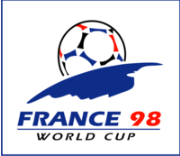
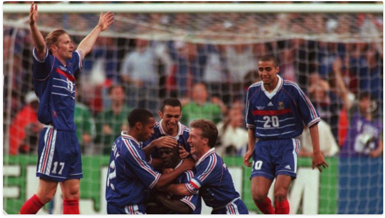
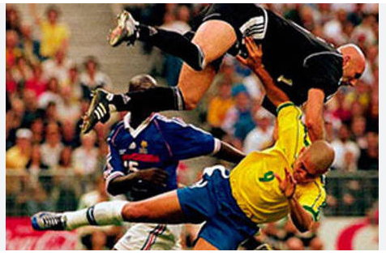
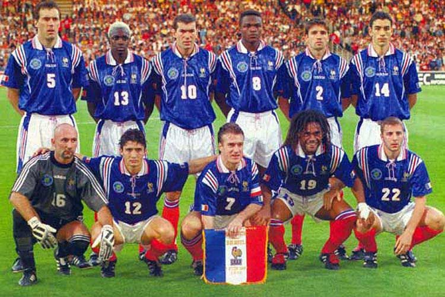

COPA DO MUNDO DE 1998

historia da copa do mundo de 1998
A Copa do Mundo FIFA de 1998 foi a décima sexta edição da Copa do Mundo FIFA de Futebol e a primeira a contar com
32 seleções. Ocorreu de 10 de junho até 12 de julho de 1998. O evento foi sediado na França, pela segunda vez,
tendo partidas realizadas nas cidades de Saint-Denis, Marselha, Paris, Lens, Lyon, Nantes, Toulouse,
Saint-Étienne, Bordéus e Montpellier. Trinta e duas seleções nacionais foram qualificadas para participar desta
edição do campeonato, sendo quinze delas europeias, oito americanas, cinco africanas e quatro asiáticas. O
torneio foi marcado por goleadas, entre elas França 4 x 0 Arábia Saudita, Brasil 4 x 1 Chile, Espanha 6 x 1
Bulgária, Holanda 5 x 0 Coreia do Sul e Argentina 5 x 0 Jamaica.Se por um lado o Uruguai foi o único campeão
mundial que não esteve presente, a Copa recebeu países das três Américas, da Europa, da África e da Ásia, com
quatro estreantes: África do Sul, Croácia, Jamaica e Japão.
Um Brasil cercado de expectativa
Campeã nos Estados Unidos quatro anos antes, a seleção brasileira foi para a França sem o grande nome da
conquista do tetra: Romário acabou cortado por lesão. O Baixinho chorou na entrevista do anúncio do corte, e
contestou a decisão de Zagallo.Se não tinha Romário, a seleção tinha Ronaldo, eleito o melhor jogador do mundo
em 1997. O craque estava em alta
e prometia comandar a seleção rumo ao penta (o que só se confirmou anos mais tarde).O primeiro jogo da Copa foi
no maior estádio construído para aquele Mundial, o Stade de France. O Brasil sofreu,
mas venceu a Escócia por 2 a 1, com um gol de César Sampaio e um contra de Boyd.A campanha brasileira na
primeira fase esteve longe de ser brilhante, com um 3 a 0 sobre Marrocos (Ronaldo,
Rivaldo e Bebeto marcaram) e derrota para a Noruega (2 a 1), mas a vaga nas oitavas foi garantida com a
liderança da chave.

classificaçao francesa para grande decisao após vencer a Croácia
Os meninos franceses
A seleção francesa, comandada por Aimé Jacquet, avançou com facilidade em seu grupo, aproveitando a fragilidade
de adversários como África do Sul e Arábia Saudita e superando a Dinamarca, que avançou em segundo.
A primeira fase francesa ficou marcada também pelo aproveitamento dos jovens Henry e Trezeguet, lançados aos 19
anos pelas ausências de Guivarch e Dugarry. O ponto negativo foi a expulsão de Zidane, que agrediu um
adversário saudita e foi suspenso até as quartas de final.
A vitória francesa sobre a Arábia Saudita, por 5 a 0, ficou marcada também por outro fato: Carlos Alberto
Parreira, campeão com o Brasil quatro anos antes, se tornou o primeiro técnico demitido durante um Mundial.
No grupo B a Itália avançou junto com o Chile, de Salas e Zamorano (os chilenos se classificaram só com
empates); no E seguiram Holanda e México; no F as favoritas Alemanha e Iuguslávia; no G Romênia e Inglaterra e
no H Argentina e a estreante Croácia.
O grupo D foi um dos mais fortes, com a Espanha, a Nigéria (campeã olímpica), o Paraguai (de Chilavert e
Gamarra) e a Bulgária (semifinalista quatro anos antes). Sul-americanos e africanos conseguiram superar os
europeus para avançar.
Jogaços no mata-mata
fase de mata-mata da Copa do Mundo ficou marcada com jogaços inesquecíveis. Nas oitavas, mais um épico encontro
entre ingleses e argentinos. A Inglaterra foi valente, mesmo depois da expulsão de David Beckham, mas acabou
eliminada pela Argentina nos pênaltis.Nas quartas, os argentinos acabaram derrubados pela Holanda, enquanto a
França passou nos pênaltis diante da
Itália e a Croácia, com um surpreendente 3 a 0, derrubou a Alemanha em uma das maiores zebras daquela Copa.
O Brasil mostrou força e também sorte no mata-mata. Derrubou o Chile com um categórico 4 a 1, com dois de César
Sampaio e dois de Ronaldo; derrubou a Dinamarca dos irmãos Laudrup (3 a 2, com brilho de Rivaldo e Bebeto); e
desbancou a Holanda nos pênaltis, com a estrela de Taffarel.
Apesar da valentia de Davor Suker, a Croácia acabou eliminada e a adversária do Brasil na grande decisão foi a
França, no dia 12 de julho no Stade de França.
 beckmann expulso em jogo decisisvo contra a Argentina
beckmann expulso em jogo decisisvo contra a Argentina
O drama brasileiro e o primeiro título francês
A final daquela Copa começou bem antes do apito inicial. Antes do encontro, depois do almoço, Ronaldo, o
Fenômeno, resolveu tirar um cochilo. Acordou rodeado pelos companheiros e pelo médico Lídio Toledo. Ronaldo teve
uma convulsão.A decisão de Zagallo foi de tirar Ronaldo do time, e na escalação o ataque tinha Edmundo. Mas
Ronaldo conversou
com o técnico e pediu para jogar. Como negar o pedido do melhor do mundo?
Só que Ronaldo não foi o mesmo, e nem a seleção brasileira. Apesar de algumas chances no começo da partida, o
Brasil estava tenso, e os Azuis souberam aproveitar bem.
Roberto Carlos fez a primeira lambança do dia e cedeu um escanteio para os franceses em corte displicente. A
jogada custou caro: Zinedine Zidane aproveitou a cobrança para abrir o placar para os donos da casa.
Ainda antes do intervalo, mais um escanteio na área e mais um gol de Zidane. Mesmo com um a menos depois da
expulsão de Marcel Desailly, a França conseguiu o terceiro gol com Petit e levantou, pela primeira vez na
história, com o capitão Didier Deschamps, a Copa do Mundo.

lance da decisão que contundiu Ronaldo
conseguido esse feito como jogador e como treinador.A copa teve vários destaques, como Edwin van der Sar, Jaap
Stam, Frank de Boer, Edgar Davids, Patrick Kluivert e
Dennis Bergkamp da Holanda, Brian Laudrup e Michael Laudrup da Dinamarca, Gabriel Batistuta, Ariel Ortega e
Verón da Argentina, David Beckham e Michael Owen da Inglaterra, Paolo Maldini e Christian Vieri da Itália, Davor
Šuker da Croácia, Gamarra e Chilavert do Paraguai, Taffarel, Roberto Carlos, Cafu, Dunga, Rivaldo e Ronaldo
Fenômeno do Brasil e Fabien Barthez, Lilian Thuram, Marcel Desailly, Laurent Blanc, Didier Deschamps, Youri
Djorkaeff, Thierry Henry e Zinédine Zidane da França.

França campeã 1998
Estadios da copa 1998
Stade de France

O Stade de France é um estádio multiúso localizado na cidade de Saint-Denis, ao norte da capital Paris, França.
Foi construído entre os anos de 1993 e 1997, tendo sido inaugurado em 1998 para a Copa do Mundo daquele ano. O
estádio tem a capacidade de abrigar 79 959 torcedores. Foram gastos 407 milhões de euros na construção.
Atualmente é pouco utilizado por equipes de futebol, apenas para amistosos da Seleção Francesa de Futebol,
devido a preferência dos clubes pelo Estádio Parc des Princes, mais próximo do centro de Paris. Foi a sede da
Final da Copa do Mundo de Rugby de 2007 e de outras partidas da mesma competição. Também é utilizado para shows
e já recebeu grandes turnês de diversos artistas como Madonna, Beyoncé, U2, Rihanna e Coldplay, entre outros. No
rugby, este hospeda regularmente jogos do calendário nacional e internacional como a final do Top 14 e os jogos
da Seleção francesa de rugby no Seis Nações.
Stade Vélodrome

O Stade Vélodrome, ou simplesmente Vélodrome, (Velódromo em francês) é um estádio localizado na cidade de
Marseille, no sul da França, de propriedade da cidade de Marselha, e com capacidade para 67.394 espectadores.Foi
inaugurado em 13 de junho de 1937 num jogo entre Marseille e o time italiano do Torino, com vitória francesa por
2 a 1. O nome foi dado devido a antiga pista de ciclismo que ficava em volta do campo. Em 1984, com a Eurocopa,
a pista foi retirada.Na Copa do Mundo de 1938, recebeu dois jogos, entre eles, a semifinal entre Itália e
Brasil, com vitória
italiana por 2 a 1.
Ao vencer o Toulouse por 2 a 0 em 19 de outubro de 2014, o Olimpique bateu o recorde de público do Vélodrome,
com 61.846 torcedores presentes.[1] O recorde de público anterior era de 58.897 torcedores na semifinal da Copa
da UEFA, quando Olympique de Marselha venceu o Newcastle United FC, em 6 de Maio de 2004.
Foi reformado para receber jogos na Copa do Mundo de 1998, tendo a capacidade ampliada para os atuais cerca de
60.000 lugares, e abrigou mais dois jogos da Seleção Brasileira. A derrota por 2 a 1 para a Noruega e a vitória
nos pênaltis sobre a Holanda, pelas semifinais.O estádio também abriga diversas partidas de rugby, incluindo
seis da Copa do Mundo de Rugby de 2007.
Parc des Princes

O Parc des Princes (em português, "Parque dos Príncipes"), é um estádio localizado a oeste de Paris, na França.
Inaugurado em 18 de julho de 1897, é predominantemente utilizado pelo clube Paris Saint-German, mas também
abriga partidas de rugby.Ele está localizado num enorme complexo de mesmo nome, o Parc des Princes, criado
pelo Duque de Morny em 1860.O estádio já sediou 9 jogos de Copa do Mundo. Três em 1938 e seis na Copa do Mundo
de 1998, entre eles a disputa pelo 3º lugar, entre Croácia e Holanda.
Hospedou cinco jogos da Copa do Mundo de Rugby de 2007, incluindo a decisão do terceiro lugar.
Atualmente, há um projeto para ampliação do Parc des Princes, dos atuais 48.500 para 54.000 lugares sentados.
Stade de Gerland

O Stade de Gerland é um estádio de localizado em Lyon, no sudeste da França, tem capacidade para 41.842
espectadores. Foi a casa do time de futebol Olympique Lyonnais entre 1950 e 2015, atualmente é a casa do time de
rugby Lyon OU.Começou a ser construído em 1913, mas, com a Primeira Guerra Mundial, foi interrompido. Voltou a
ser construído em 1919 com a ajuda de prisioneiros de guerra alemães, até que, em 1920, foi inaugurado, com uma
pista de ciclismo e uma de atletismo em volta do gramado.
Em 1960, a pista de ciclismo foi destruída em prol da ampliação da capacidade para 50.000 lugares. Em 1984, com
a Eurocopa, o estádio foi ampliado para 51.680 lugares.
Foi totalmente reformado para a Copa do Mundo de 1998, sendo removida a pista de atletismo e colocadas cadeiras
para todos os torcedores. A capacidade máxima ficou em 42.000 torcedores. Recebeu 6 partidas da Copa, entre elas
o "jogo da paz" entre Estados Unidos e Irã e as quartas de final, entre Alemanha e Croácia.
O recorde de público no Campeonato Francês de Futebol é de 48.552 num jogo entre Olympique Lyonnais e AS
Saint-Étienne em 9 de Setembro de 1980.
Na Copa das Confederações de 2003, aconteceu uma tragédia: no jogo Camarões e Colômbia, o meio-campista
camaronês Marc-Vivien Foé teve um colapso em campo, vindo a falacer antes de chegar ao hospital.
Foi sede ainda da Copa do Mundo de Rugby de 2007.
Stade Félix-Bollaert

O Stade Bollaert-Delelis é um estádio localizado em Lens, na França. É a casa do time de futebol RC Lens e pode
abrigar até 38.223 espectadores segundo o site oficial do clube de futebol RC Lens.Construído em 1932, leva o
nome do diretor comercial da empresa mineira de Lens, Félix Bollaert, que incentivou o início dos clubes de
futebol da cidade.
Foi reformado para a Copa do Mundo de 1998, quando recebeu seis partidas, incluindo um jogo das Oitavas de Final
entre França e Paraguai, que terminou 1 a 0 para os donos-da-casa, com o gol de ouro.
O estádio (único em estilo inglês na França) é motivo de orgulho na pequena cidade. O estádio possui capacidade
próxima a da população da cidade de Lens (36.206 habitantes).
O estádio recebeu partidas da Eurocopa 1984, e das Copas do Mundo de Rugby de 1999 e 2007.
O estádio foi um dos escolhidos para receber jogos do Campeonato Europeu de Futebol de 2016, onde foi
contemplado com 3 jogos da fase de grupos e um jogo das oitavas-de-final.
Stade de la Beaujoire

O Stade de la Beaujoire (Nome Oficial: Stade Louis Fonteneau) é um estádio localizado em Nantes, na França. É a
casa do time de futebol francês FC Nantes Atlantique.
Inaugurado em 8 de Maio de 1984 num amistoso entre o FC Nantes Atlantique e a Seleção Romena de Futebol, tinha
capacidade para 52.923 torcedores. Atualmente, a capacidade máxima é de 38.285 espectadores.
Em 1989 foi rebatizado para Stade Louis Fonteneau, em homenagem ao Presidente do clube de 1969 até 1986, mas a
maioria dos torcedores ainda chama pela nome original.
Recebeu partidas da Eurocopa de 1984 e da Copa do Mundo de 1998 (entre elas, o jogo Brasil e Dinamarca pelas
Quartas de Final). Também foi uma das sedes da Copa do Mundo de Rugby de 2007.
Stadium Municipal de Toulouse

O Stadium Municipal de Toulouse é um estádio localizado na cidade de Toulouse, na região do Midi-Pyrénées, da
França. É a casa do time de futebol Toulouse Football Club e tem capacidade para 33.150 espectadores.Inaugurado
em 1937 como Stade Chapou, foi utilizado na Copa do Mundo de 1938, passou por amplas reformas em 1949 e em 1997
para receber a Copa do Mundo de 1998. Foi ainda uma das sedes da Copa do Mundo de Rugby de 2007.
Stade Geoffroy-Guichard

O Stade Geoffroy-Guichard é um estádio localizado na cidade de Saint-Étienne, na região de Ródano-Alpes, na
França. Com capacidade para 42.000 espectadores, sedia os jogos da AS Saint-Étienne, da mesma cidade.É chamado
de "le chaudron" (o caldeirão) ou "l'enfer vert" (o inferno verde), numa referência às cores do time.Construído
em 1930, já passou por diversas reformar e recebeu vários torneios de futebol, como a Eurocopa de 1984, a Copa
do Mundo de 1998 e a Copa das Confederações de 2003. Além disso, recebeu partidas da Copa do Mundo de Rugby de
2007.
A construção do estádio começou em setembro de 1930. A instalação foi inaugurada oficialmente em 13 de setembro
de 1931, e o primeiro jogo ocorreu em 17 de setembro. Naquela época havia apenas uma arquibancada com espaço
para 1.800 torcedores. A capacidade foi gradualmente ampliada. Em 1938 já havia 15.000 lugares para
espectadores, em 1957 as instalações de atletismo em Geoffroy-Guichard foram removidas e ampliadas para 25.000
lugares.
Em 1965, o clube vendeu o estádio à cidade pelo equivalente a 25 milhões de euros e foi instalado um sistema de
holofotes. Em 1968, a próxima fase de expansão com 39.570 lugares foi inaugurada. Entre 1968 e 1976, todas as
arquibancadas foram cobertas.
Para o Campeonato Europeu de Futebol de 1984 o local foi modernizado e o espaço aumentou para 48.274, dos quais
22.000 eram assentos. A Copa do Mundo de 1998 levou a outra reforma e redução da capacidade para o número atual
de 41.965 lugares. O edifício possui quatro arquibancadas, cada uma delas dividida em níveis superior e
inferior. A torcida recorde de 47.747 espectadores foi alcançada nas quartas-de-final da Copa da França, no jogo
contra o Lille, em 11 de maio de 1985.
A Fédération Française de Football irá candidatar-se com o Stade Geoffroy-Guichard para receber a final de
2022/23 da UEFA Europa League. A federação enviou à UEFA os documentos necessários, que estão a ser analisados.
O Saint-Étienne já havia vencido o Toulouse (Estádio Municipal), Nice (Stade de Nice) e Montpellier (Stade de la
Mosson), de acordo com Gaël Perdriau, prefeito de Saint-Étienne.
Stade Chaban-Delmas

O Stade Jacques Chaban-Delmas (antigo Parc Lescure) é um estádio localizado em Bordeaux, no oeste da França. É a
casa do time de futebol Bordeaux. Sua capacidade é de 34.694 espectadores.Construído em 1924 como um parque de
esportes, foi transformado num estádio em 1938, com o nome de Parc Lescure. Nesse mesmo ano, foi sede de dois
jogos da Copa do Mundo de 1938. Ambos tiveram a Seleção Brasileira como vencedora: Brasil 2x1 Tchecoslováquia e
Brasil 4x2 Suécia.
Reformado duas vezes mais em 1987 e 1998, recebeu seis partidas da Copa do Mundo de 1998 e quatro da Copa do
Mundo de Rugby de 2007.
Em 2001, mudou o nome para Stade Jacques Chaban-Delmas em homenagem ao político, Primeiro Ministro francês entre
1969 e 1972, que faleceu em Novembro de 2000.
Stade de la Mosson

O Stade de la Mosson é um estádio localizado na cidade de Montpellier, na região de Languedoc-Roussillon, na
França. É a casa do time de futebol da Montpellier Hérault Sport Club.Construído nos primeiras anos da década de
1970, sofreu algumas reformas ao longo dos anos, sendo mais notável para a Copa do Mundo de 1998, quando passou
a ter 35.500 lugares, sediando seis partidas.
Também já sediou quatro amistosos da Seleção Francesa de Futebol (o último em 2005 contra a Costa do Marfim).
Esse também é o jogo em que mais pessoas compareceram ao estádio: 31.457.
Em 2007, foi uma das sedes da Copa do Mundo de Rugby de 2007.